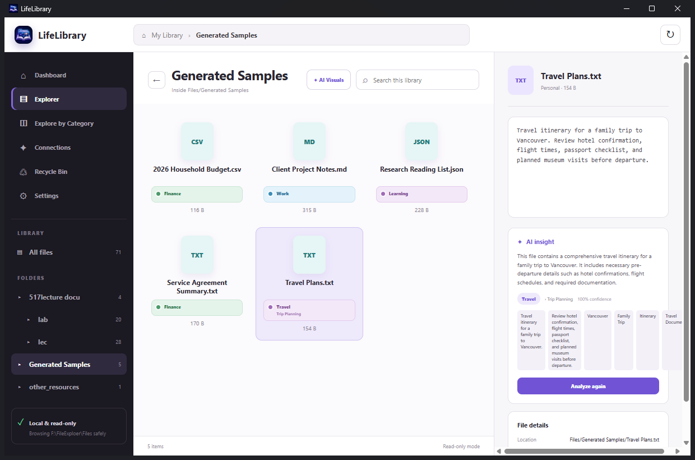
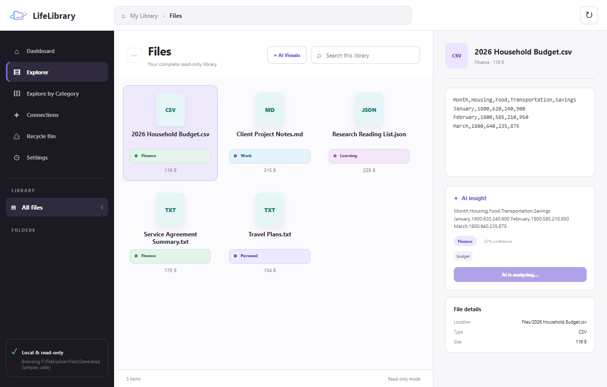
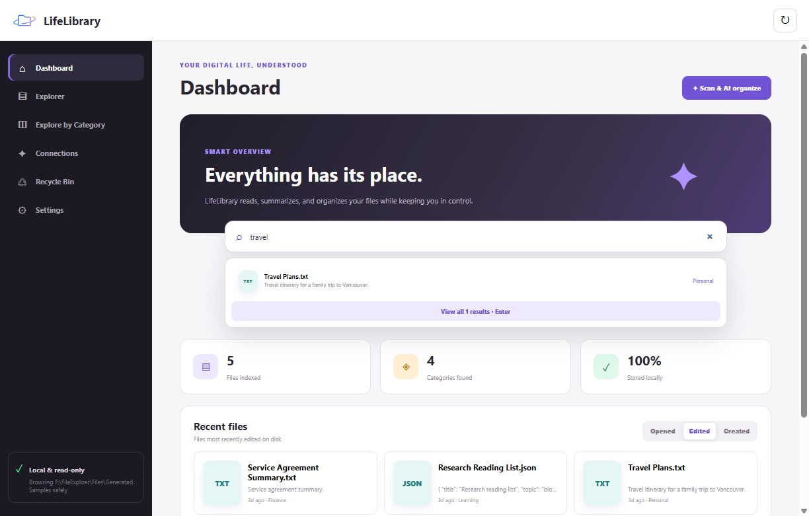
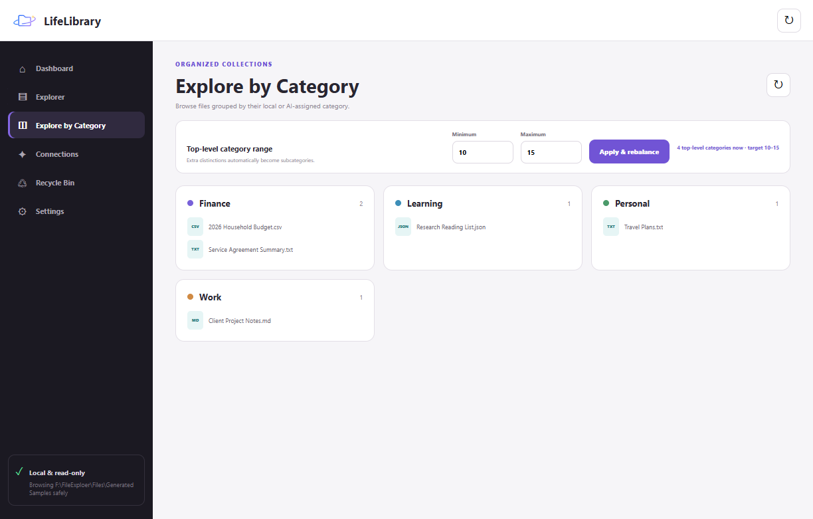
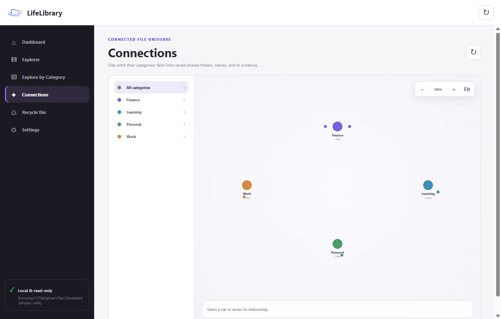

Local-first intelligent file explorer
✦ Made with Codex 5.6
Your digital life,
understood.
LifeLibrary reads, summarizes, categorizes, and connects your files—inside a desktop explorer that already feels familiar.
✓ Files stay in place✓ Local AI supported✓ Windows desktop app
LifeLibrary · Generated Samples

✦ AI insightSummary ready
100%Stored locally
THE FILE EXPLORER, REIMAGINEDSUMMARIZECATEGORIZECONNECTRETRIEVE
WHY LIFELIBRARY
Files contain your work.
LifeLibrary reveals the meaning.
Folders and filenames are useful—until they are not. LifeLibrary adds a semantic layer to the files you already have, helping you recover context without changing the way you work.
BUILT FOR RECALL
Stop remembering where.
Remember what.
Every view answers a different question—from “What changed recently?” to “Which files are related?”
01
Understand files instantly
Select a document and get a concise summary, useful evidence, and a category—without leaving the explorer.
02
Search what you remember
Look for a topic, phrase, project, or idea. LifeLibrary searches its understanding of your files, not only their names.
03
Shape your own taxonomy
Choose how many top-level categories you want. Extra detail becomes useful subcategories instead of visual clutter.
04
See the knowledge universe
Explore files as a zoomable constellation where categories and related ideas become visible at a glance.
A REAL EXPLORER
Browse normally.
Understand deeply.
Single-click for an AI-assisted overview. Double-click to open. Right-click for the actions you expect. LifeLibrary adds intelligence without replacing familiar file workflows.
- 01 Folder navigation with icon and thumbnail views
- 02 Document previews and detailed file information
- 03 Open, rename, reveal, and recycle-bin actions

REAL PRODUCT INTERFACE
SEMANTIC SEARCH
Search your library like you remember it.
Type “travel,” a project idea, or a phrase from the document. Results are ranked using filenames, summaries, evidence, and categories.

ADAPTIVE TAXONOMY
Categories that stay useful.

FILE UNIVERSE
Relationships become visible.

FROM CHAOS TO CLARITY
Three steps.
No new filing habit.
LifeLibrary works with the organization you already have and gradually makes it easier to understand.
Choose a vault
Point LifeLibrary at the folder you want to explore. Your files stay in their original location.
Scan once
The app extracts useful text, creates summaries, and assigns clear categories.
Find anything
Browse normally, search by meaning, or follow connections across your library.
LM StudioYour vaultYour API
LOCAL WHEN YOU WANT IT
Intelligence with
clear boundaries.
Choose a vault, choose an analysis provider, and keep the decision visible. LifeLibrary supports local models through LM Studio and optional API-based analysis.
01Files remain in their existing folders02Local analysis is a first-class option03Credentials are stored using secure desktop storage
SEE IT IN MOTION
Meet LifeLibrary
from folder to insight.
See the real desktop workflow—from folders and summaries to search, categories, connections, local AI, and the decisions accelerated by Codex 5.6.
ONE LIBRARY. EVERY PART OF LIFE.
Built for the files
that quietly run your world.
Research. Budgets. Projects. Travel. Family records. LifeLibrary is designed for the everyday documents that matter more than their filenames suggest.
QUESTIONS, ANSWERED
A calmer way to
manage digital life.
Does LifeLibrary move or reorganize my files?+
No. The explorer is designed around your existing folders and keeps files in their original locations.
Can I use a local AI model?+
Yes. LifeLibrary connects to LM Studio, so compatible local models can analyze files without a cloud provider.
Which file types can it understand?+
The current app supports common text, CSV, PDF, DOCX, PPTX, spreadsheet, image, and other everyday formats, with practical limits for very large documents.
Can I control the categories?+
Yes. You can set a target range for top-level categories and let additional distinctions become subcategories.
YOUR FILES ALREADY TELL A STORY
Let LifeLibrary
connect the chapters.
Explore the open project, run the Windows desktop app, and turn scattered files into a library you can understand.